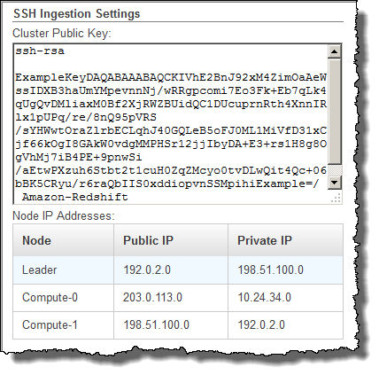

本文為英文版的機器翻譯版本，如內容有任何歧義或不一致之處，概以英文版為準。
步驟 3：擷取 Amazon Redshift 叢集公有金鑰和叢集節點 IP 地址
使用主控台擷取您叢集的 Amazon Redshift 叢集公有金鑰和叢集節點 IP 地址
-
存取 Amazon Redshift 管理主控台。
-
在導覽窗格中，選擇叢集連結。
-
從清單選取您的叢集。
-
找到 SSH Ingestion Settings (SSH 擷取設定) 群組。
記下 Cluster Public Key (叢集公有金鑰) 和 Node IP addresses (節點 IP 地址)。您將在稍後的步驟中用到它們。
您將使用步驟 3 的私有 IP 地址來設定 Amazon EC2 主機以接受來自 Amazon Redshift 的連線。
若要使用 Amazon Redshift CLI 來擷取叢集的叢集公有金鑰和叢集節點 IP 地址，請執行 describe-clusters 命令。例如：
aws redshift describe-clusters --cluster-identifier <cluster-identifier>
回應將包含一個 ClusterPublicKey 值以及私有和公用 IP 位址清單，類似下列內容：
{ "Clusters": [ { "VpcSecurityGroups": [], "ClusterStatus": "available", "ClusterNodes": [ { "PrivateIPAddress": "10.nnn.nnn.nnn", "NodeRole": "LEADER", "PublicIPAddress": "10.nnn.nnn.nnn" }, { "PrivateIPAddress": "10.nnn.nnn.nnn", "NodeRole": "COMPUTE-0", "PublicIPAddress": "10.nnn.nnn.nnn" }, { "PrivateIPAddress": "10.nnn.nnn.nnn", "NodeRole": "COMPUTE-1", "PublicIPAddress": "10.nnn.nnn.nnn" } ], "AutomatedSnapshotRetentionPeriod": 1, "PreferredMaintenanceWindow": "wed:05:30-wed:06:00", "AvailabilityZone": "us-east-1a", "NodeType": "ds2.xlarge", "ClusterPublicKey": "ssh-rsa AAAABexamplepublickey...Y3TAl Amazon-Redshift", ... ... }
若要使用 Amazon Redshift API 來擷取叢集的叢集公有金鑰和叢集節點 IP 地址，請使用 DescribeClusters 動作。如需詳細資訊，請參閱 Amazon Redshift CLI 指南或亞馬 Amazon Redshift API 指南DescribeClusters中的描述叢集。